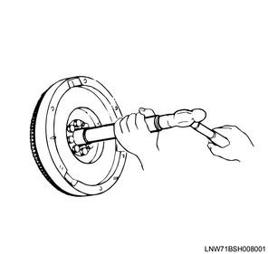
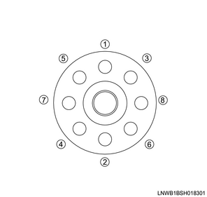
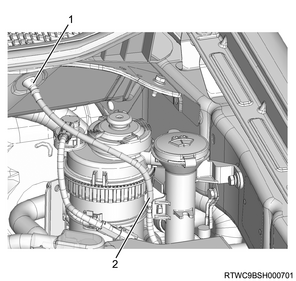
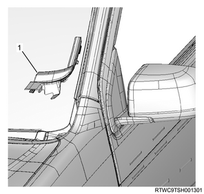
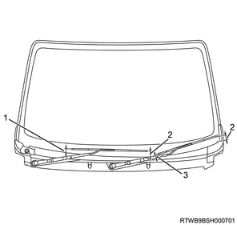

Flywheel installation (4JJ1)
1. Ring gear installation
1. Heat the ring gear with the gas burner.
Note
- Uniformly heat the ring gear using the gas burner.
Heating temperature： 200 ℃ or less { 392 °F or less }
2. Install the ring gear to the flywheel.
Note
- Referring to the diagram, install the ring gear.
- After shrink-fitting, confirm that the ring gear is airtight against the flywheel.
- Chamfered side
- Ring gear
- Flywheel
2. Pilot bearing installation
1. Put the pilot bearing on the flywheel.
Note
- Place the pilot bearing so that it crosses perpendicular to the crankshaft bearing installation hole.
2. Install the pilot bearing to the flywheel using special tool.
Note
- Hit the pilot bearing outer race with a brass hammer using a pilot bearing installer, and then hit the bearing in the crankshaft bearing installation hole.
SST: 5-8522-0024-0 - pilot bearing installer

3. Flywheel installation
1. Apply the engine oil to the bolt.
Note
- Apply it to the threaded portion of the bolt.
2. Temporarily tighten the flywheel to the crankshaft.
Note
- Temporarily tighten in the order shown in the diagram.

Note
- For automatic transmission vehicles, install the sleeve, flywheel, flexible plate, and washer in that order, and temporarily tighten in the order in the diagram.
3. Install special tool to the rear plate.
Note
- Install the crankshaft stopper to the starter installation section of the rear plate.

SST: 5-8840-0214-0 - crankshaft stopper
4. Securely tighten the flywheel to the crankshaft.
Note
- Tighten in the order in the diagram.
Tightening torque： 59 N・m { 6.0 kgf・m / 44 lb・ft } 1st time
Specified angle： 60 to 90 ° 2nd time
4. Clutch assembly installation
5. Transmission assembly installation
6. Starter motor installation
1. Install the starter motor to the rear plate.
Tightening torque： 94 N・m { 9.6 kgf・m / 69 lb・ft }
2. Connect the earth cable to the starter motor.
7. Oil level gauge guide tube installation
1. Apply the engine oil to the O-ring.
2. Install the oil level gauge guide tube to the crankcase.
Tightening torque： 25 N・m { 2.5 kgf・m / 18 lb・ft }
8. Transmission oil level gauge tube installation
1. Install transmission oil level gauge tube to the oil pan.
9. Cowl panel installation
1. Install the cowl panel to vehicle.
Note
- Install with the 8 bolts.

10. Wiper linkage connect
1. Connect the wiper linkage to vehicle.

- Nut
- Bolt
Tightening torque： 5.3 N・m { 0.5 kgf・m / 46 lb・in }
Note
- Connect the connector to the wiper motor.
11. Cowl cover installation
1. Install the grommet to the cowl panel.
Note
- Install with the top mark facing upward.
- After installing the grommet to the cowl panel, verify that it is installed securely.
- If the grommet drops off when it is pushed back into the cowl panel, install it again.

- Top mark
2. Install the cowl cover to the cowl panel.
3. Connect the washer hose to the clip.

- Grommet
- Connection of washer hose
12. Side cowl cover installation
1. Install the side cowl cover to the body.

- Side cowl cover
13. Wiper arm installation
1. Install the wiper arm to vehicle.
Caution
- Confirm that the wiper motor is stopped at the auto stop position.
Tightening torque： 31.0 N・m { 3.2 kgf・m / 22.9 lb・ft }

- 29 mm (1.14 in)
- 36.5 - 51.5 mm (1.44 - 2.03 in)
- 18 mm (0.71 in)
14. Wiper arm cover installation
1. Install the wiper arm cover to the wiper arm.
15. Engine cover installation
1. Install the engine cover to the engine.

- Engine cover
16. Engine hood assembly installation
1. Temporarily tighten the hinge bolt to the engine hood assembly.
Note
- Align the hinge with the marking made during removal.
2. Inspect the clearance.
Note
- Check the engine hood assembly and the fender.
3. Adjust the clearance to the specified value.
Note
- Adjust the installation of the engine hood hinge to adjust the clearance.

- Clearance: 4.0 mm {0.16 in}
- Height, level difference: -1.5 mm {-0.06 in}
Note
- Turn the hood rest to adjust its height, and adjust the level difference against the engine hood.

- Hood rest
4. Apply the grease to the striker.
Note
- Apply a thin layer of grease to the striker.
5. Install the engine hood garnish to the engine hood.
Note
- Tighten the 6 nuts to the specified torque.
Tightening torque： 6 N・m { 0.6 kgf・m / 53 lb・in }
6. Securely tighten the hinge bolt to the engine hood assembly.
Tightening torque： 6.5 N・m { 0.66 kgf・m / 58 lb・in }
7. Connect the tube to the washer nozzle.
17. Battery ground cable connect
1. Connect the battery ground cable to the battery.
2. Close the engine hood assembly.
3. Lower vehicle.